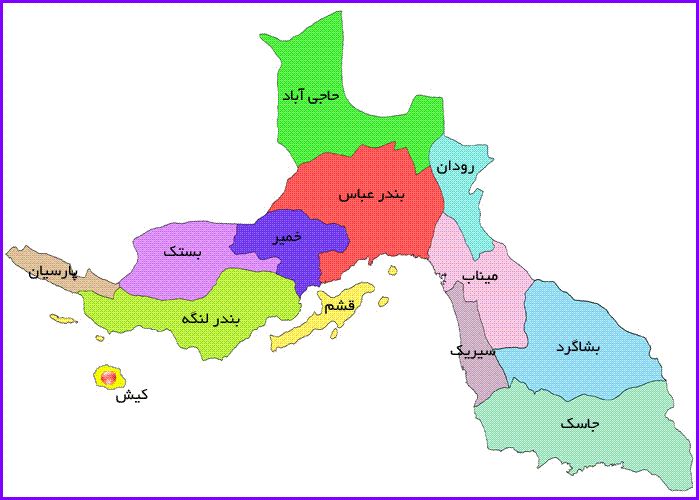

استان هرمزگان نام یکی از استانهای جنوبی ایران است که در شمال تنگه هرمز قرار گرفتهاست.
استان هرمزگان در حدفاصل بین مختصات جغرافیایی ۲۵ درجه و ۲۴ دقیقه تا ۲۸ درجه و ۵۷ دقیقه عرض شمالی و ۵۳ درجه و ۴۱ دقیقه تا ۵۹ درجه و ۱۵دقیقه طول شرقی از نصفالنهار گرینویچ واقع شدهاست. این استان حدود ۶۸هزار کیلومتر مربع (کمابیش اندازه کشور گرجستان) مساحت دارد که از این نظر هشتمین استان کشور است.
هرمزگان از جهت شمال و شمال شرقی با استان کرمان، غرب و شمال غربی با استانهای فارس و بوشهر از شرق با سیستان و بلوچستان همسایه بوده و جنوب آن را آبهای گرم خلیجفارس و دریای عمان در نواری به طول تقریبی ۹۰۰ کیلومتر دربرگرفتهاست.
در عکس زیر شهرهای این استان به تفکیک مشخص شده اند.
